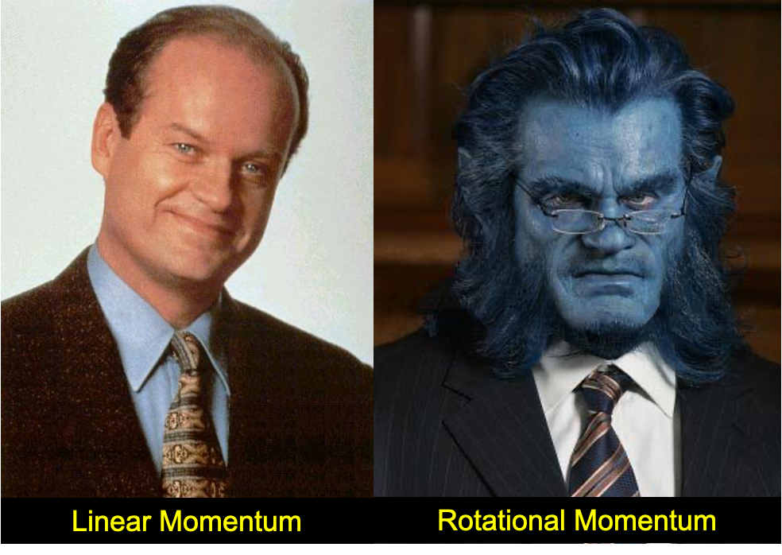
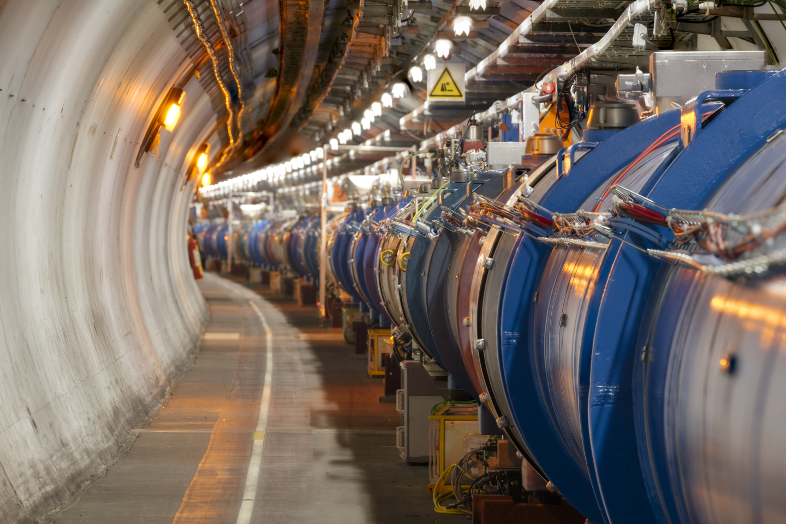
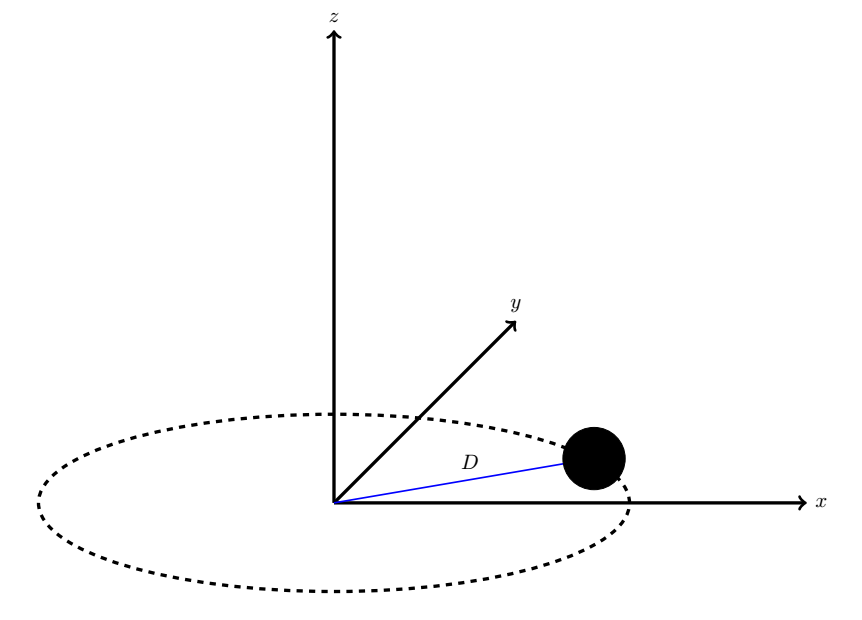

B8.2 Rotational Momentum: Part 1#
Angular momentum, or rotational momentum, is the measure of rotational motion just as linear momentum is the measure of linear motion. We will first define angular momentum in a similar fashion as the linear counterpart, but we will quickly realize that the angular momentum is a beast compared to linear momemtum. We will make certain assumptions that will restrict its complexity and hopefully help us gain some confidence in those simpler scenarios. For a more rigorous discussion, you will need to take the course on classical mechanics.
B8.2.1 Angular Momentum: Point Particle#
We defined the linear momentum in terms of its resistance to a change in linear motion and its linear velocity as
It would be tempting to define the rotational (or angular momentum) as
where \(i\) is the moment of inertia and is the particle’s resistance to a change rotational motion and \(\omega\) is its rotational velocity. This is in principle correct, but only if we consider the moment of inertia as a tensor. Since we are not ready to handle the truth on that matter, we will apply the moment of inertia differently.
Instead, we will first disucss the meaning of rotational motion as restricted to this course. We restrict our discussion to motion around a given axis. That implies that we consider the moment of inertia around that given axis as well as the components of rotational velocity around that given axis. We can then define the angular momentum components around the respective axis as
Example 1
A point particle of mass 0.5 kg is moving in a circular motion in the xy-plane with radius 0.5 m and an angular speed of 25 rad/s. What is its angular momentum around the three principal axes?
Solution
We will consider each principal axis separately. We note that the particle is rotating about the z-axis since it is confined to the xy-plane.
The angular speed around the x-axis is zero: \(l_x = 0\)
The angular speed around the y-axis is zero: \(l_y = 0\)
The moment of inertia about the z-axis is
and the rotational momentum around the z-axis is then
A turntable disk is spinning at a rate of \(5.0~\textrm{rev/s}\). There is a bug with a mass of 5.0 g on the turntable at location 8 cm from the center of the disk.
Convert the angular speed from rev/s to rad/s.
Consider the bug to be point particle, what is its angular momentum around the rotation axis?

At full power, trillions of protons will race around the Large Hadron Collider (LHC) accelerator ring 11,245 times a second, travelling at 99.9999991\(\%\) the speed of light. The collider is contained in a circular tunnel, with a circumference of 26.7 kilometers. What is the angular momentum of a single proton (considered a point particle) around the axis of rotation? HINT: You will need to look up the mass of a proton.
B8.2.2 Angular Momentum: System of Particles#
This is a similar approach as for the linear case: we simply add the components together. Let us consider one component, say the z-component. The total angular momentum is
A similar relation hold for the x- and y-axis as well.
Example 2
Two particles are moving in circular motions but opposite directions. Particle A has a mass of 1.0 kg and is traveling in CCW direction with a rotational speed of 2.0 rad/s at a radius of 0.1 cm. Particle B has a mass of 0.25 kg and is traveling in CW direction with an angular speed of 5.0 rad/s at a radius of 0.5 cm. What is the rotational momentum of this system.
Solution
Let us consider CCW direciton to be positive, that implies that particle A has a positive angular velocity component and particle B has a negative angular velocity component. We will also say that the particles are moving in the xy-plane and the angular momentum is therefore equivalent to finding the z-component.
The total angular momemtum is
A turntable disk is spinning at a rate of \(5.0~\textrm{rev/s}\). There is a 5.0 g bug on the turntable at location 8 cm from the center of the disk. A second identical bug is positioned at a loction of 4 cm from the center of the disk. What is the magnitude of the angular momentum of the system of bugs? HINT: Remember to convert the angular speed to rad/s.
Two point objects A and B with masses 2.0 kg and 3.0 kg, respectively, are moving in circular motions with radii 0.5 m and 0.75 m, respectively. Object A is moving in a CW direction at 5.0 rad/s while object B is moving in a CCW direction at 8.0 rad/s. What is the angular momentum of this system?
B8.2.3 Angular Momentum: Continuous System#
Remember, a continuous system is a system where the number of point particles approaches infinity (in real applications: the number is too large to count). In this discussion, we must make another restriction on our continuous system as we will see.
In this case, the angular momentum is (we consider only around one axis, but we can extrapolate the result to the other two axis as well)
Now, the infinite sum is over the individual products between the moment of inertia and angular velocity component. This is tricky unless we consider rigid objects. In a rigid object all particles must travel at the same angular speed. That implies that
We can then label the angular speeds for all the particles as \(\Omega_z\) and pull it outside the summation:
The summation inside the parathensis is (in the limit \(N \rightarrow \infty\)) the moment of inertia of the continuous system:
Hence, our rotational momentum for a continuous system appears similar in equation form as for a point particle.
Example 3
A turntable disk with a mass of 10.0 kg and radius 15 cm is spinning at a rate of \(8.0~\textrm{rad/s}\). What is the rotational momentum of the disk?
Solution
We will need to know the moment of inertia of a disk. From looking it up in a table in the textbook, we determine that the moment of inertia of a disk rotating about an axis through its center and perpendicular to the plane of the disk to be:
If we let the plane of the disk to be in the xy-plane, then the rotational momentum is along the z-axis and is:
A turntable disk with a mass of 10.0 kg and radius 15 cm is spinning at a rate of \(8.0~\textrm{rad/s}\). There is a 5.0 g bug on the turntable at location 8 cm from the center of the disk. A second identical bug is positioned at a loction of 4 cm from the center of the disk. What is the magnitude of the angular momentum of the total system (turntable and bugs)? HINT: the total angular momentum is the sum of individual momenta.
A solid sphere of mass 5.0 kg and radius 5.0 cm is spinning at a rate of 20 rad/s around an axis through its center. What is the angular momentum of the sphere around the rotation axis?

A solid sphere of mass 5.0 kg and radius 5.0 cm is rotating at a rate of 20 rad/s around an axis that is shifted a distance of 25 cm away from the center of the sphere. What is the angular momentum of the sphere around this axis? HINT: Use the parallel axis theorem.
A solid sphere of mass 5.0 kg and radius 5.0 cm is attached to the end of a rod of mass 2.0 kg and length 0.5 m. The system is in the horizontal xy-plane and spinning around an axis perpendicalur to this plane and through the end point of the rod opposite to the sphere. If the system is rotating at a rate of 20 rad/s what is the angular momentum of the system around this axis?
HINTS: Use the parallel axis theorem for the sphere, look up moment of inertia of a rod and choose the proper version, calculate the angualr momenta of both sphere and rod and add them together.
A fun demonstration of conservation of angular momentum is to sit in a rotating chair, put your arms out and start spinning around. Then move your arms in as observe how much faster you spin. A key element here is the change in distribution of mass, or the change moment of inertia, which is causing a significant change in angular momentum. We will discuss the topic of conservation of angular momentum in later module.
For now, let us try and estimate the angular momentum of a person holding two dumbbells straight out from his/her torso. We will model the torso as a cylinder, ignore the mass of the arms, and assume the dumbbells are spherical.
An typical torso modeled as a cylinder has a mass of 54 kg and radius of 13 cm and a typical arm length is 80 cm. Consider each dumbbell to have a mass of 5.0 kg.
What is the moment of inertia of the person + dumbbell?
If the rotation rate is 0.5 rev/s, what is the angular momentum of the person+dumbbell?